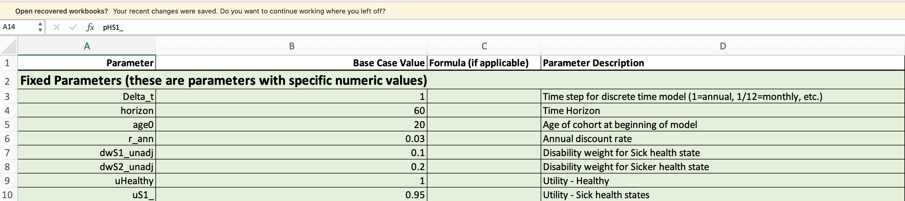
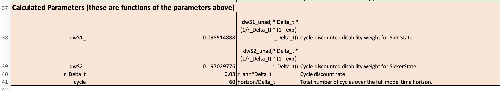
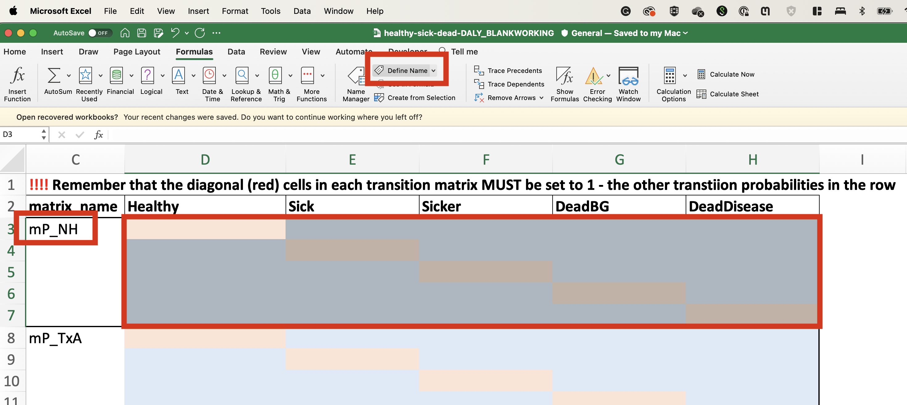
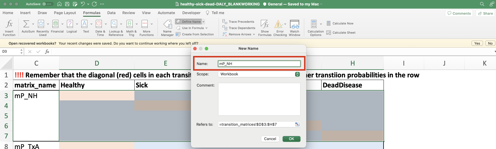

Case Study: Construct a Markov Trace
Introduction and Learning Objectives
This case study is designed to get you familiar with conducting Markov modeling in Excel. Specific learning objectives are as follows:
Parameterize and structure a Markov model.
Construct a Markov trace.
Overview of Decision Problem
Noncommunicable diseases (NCDs) have emerged as a dominant issue in global health, significantly contributing to the overall disease and mortality burden worldwide. Cardiovascular diseases (CVDs) are at the forefront of this change, accounting for a substantial portion of morbidity and mortality, particularly in low- and middle-income countries (LMICs).
In Nigeria, as in many other LMICs, this upsurge poses a significant public health challenge, exacerbating the strain on healthcare systems already grappling with infectious and other noncommunicable diseases.
The development of a Markov model for cardiovascular disease in this context provides an invaluable tool for understanding disease progression, informing public health strategies, and guiding resource allocation to combat this growing crisis effectively.
In this case study, we will draw on data and parameters from the Global Burden of Disease (GBD) study to construct a Markov model of CVD.
Model Structure
We will construct progressive CVD model in which healthy individuals develop CVD, which is captured by two health states (“Sick” and “Sicker”). These health states could, for example, correspond to living with episodes of angina and living in a post- myocardial infarction state.
Both healthy and sick patients can also transition to an absorbing death state due to causes unrelated to the disease (i.e., “background” mortality). For those with CVD, those in the “Sick” and “Sicker” states can transition to a separate death state if they experience death due to CVD-related causes (e.g., fatal MI). Separating out deaths from background causes and from CVD will be important later, when we want to calculate DALYs and DALYs averted from different interventions.
A “bubble” or state transition diagram for our Markov model is shown in Figure 1.
Model Strategies
We will first build a “natural history” model that captures the status quo. We’ll then consider the cost-effectiveness of several prevention and treatment strategies under consideration.
| Strategy | Benefit | Cost | |
|---|---|---|---|
| NH: Natural History (“Status Quo”) | |||
| A: Prevention Strategy | Prevents transitions from Healthy to CVD health state. Relative Risk (RR) = 0.98 |
Annual cost of 50 | |
| B: Prevention Strategy | Prevents transitions from Healthy to CVD health state. Relative Risk (RR) = 0.9 |
Annual cost of 150 | |
| C: Prevention Strategy | Prevents transitions from Healthy to CVD health state. Relative Risk (RR) = 0.95 |
Annual cost of 250 | |
| D: Treatment Strategy | Prevents deaths from CVD. Relative Risk of Death = 0.50 |
Annual cost of 400 |
Other Model Parameters
Our model will be constructed using the following parameters and assumptions:
- Initial cohort of 20 year olds who we follow over a 60 year time horizon.
- Annual (yearly) cycle length.
- Annual discount rate of 3% for both costs and health outcomes.
- Background mortality rates are based on GBD 2019 estimates.
- CVD incidence and mortality rates are based on GBD 2019 estimates.
- Disability weights (for YLDs in DALY outcomes)
- Sick: 0.10
- Sicker: 0.20
- Utility weights (for QALY outcomes):
- Healthy: 1.0
- Sick: 0.98
- Sicker: 0.8
- Transition probabilities are based on GBD 2019 estimates, but for the sake of simplicity, are held fixed over cycles/time.1
- A cycle spent in the “Sick” state incurs a cost of 1,000.
- A cycle spent in the “Sicker” state incurs a cost of 1,000.
Parameters in Excel Model
If you open the Excel file, you will see that the model is constructed in a series of Worksheets. The first Worksheet, “Parameters”, contains the model parameters as described above.
The parameters shaded with green are fixed; we simply put in a “base case” value. The parameters in red are constructed based on formulas; they take as inputs one or more of the green-shaded parameters, and apply a formula to get a new value. The specific formula is provided in the “Formula” column.
 … 
Part 1: Construct Transition Probability Matrices
In this part, we will use the supplied transition probabilities (in the “Parameters” worksheet) to construct transition probability matrices for each strategy.
Step 1: Define Parameter Names
Assign variable names to each parameter in the “Parameters” worksheet.
Define variable names for the fixed (green) parameters first, then for the formula-based (red) parameters second.
Step 2: Construct the Transition Probability Matrix
Open the second worksheet (“transition_matrices”) and construct a transition probability matrix for each strategy.
You can simply use the transition probability parameters for the Natural History (NH) strategy. For the other intervention-based strategies, you’ll need to use the supplied transition probabilities, but also incorporate the appropriate relative risks (“rr_”) for each strategy. You can do this by multiplying the transition probability by the relative risk parameter.
If you encounter a cell where there is no defined probability (e.g., a transition from Sick back to Healthy), simply enter a value of 0.
Once in a death state, individuals must remain in the death state. So the transition probability from DeadBG -> DeadBG must be set to 1.0, and the transition probability for DeadDisease -> DeadDisease must also be 1.0.
Relatedly, and more generally, remember that each row of the transition probability matrix must sum to 1.0. That means you can define the diagonal elements (shaded in red) as 1 minus the other transition probabilities in the row.
Step 3: Name the Transition Probability Matrix
Once you have the transition probabilities filled in for each strategy, select each matrix and name it using the name supplied the “matrix_name” column. Repeat this process for all strategies under consideration
For this exercise, you’ll be selecting a region of cells (i.e., the transition matrix values) and naming that region. You can do this using the Define Name box in the Formulas tab.
 
Step 4: Insert the Transition Probability Matrix into Each Strategy Worksheet
Next, open up the “NH” worksheet. This is the worksheet where we will construct the Markov trace and perform all the calculations to calculate cost, QALY, and DALY outcomes.
Insert the transition probability matrix for the NH strategy into the space reserved for the transition matrix in the NH worksheet
{kind=link}
Step 5: Construct the Markov Trace for the NH Strategy
Use the transition probability matrix to fill out the Markov trace for the NH strategy.
Our objective here is to fill out the Markov trace, which is the table that tracks the cohort as it moves through the various health states over time. In principle, we could track a cohort of any size (e.g., 100,000 people; 1,000,000 people, etc.). However, to simplify calculations of the average cost and health outcomes, we will model a cohort of size 1.0. You can see this in the first row of the Markov trace—this row shows that our model will start with a cohort of 1 patient who begins in the “Healthy” state.
{kind=link}
You objective here is to fill in each row of the Markov trace. To do this, you must multiply the fraction of the cohort in each state by the transition probability for that state. For example, in the first row, we have 1.0 patients in the Healthy state. Suppose the transition probability from Healthy to Healthy is 0.95. In that case, the number of patients who will remain in the Healthy state in the next cycle is 1.0 x 0.95 = 0.95.
Simliarly, suppose the transition probability for Healthy -> Sick is 0.05. In that case, the number of patients who will transition from Healthy to Sick in the next cycle is 1.0 x 0.05 = 0.05.
The trick here is to incorporate all the possible transitions into each state. For example, in each cycle, the DeathBG state must include all transitions from Healthy -> DeathBG, Sick -> DeathBG, and Sicker -> DeathBG, as well as all the individuals who remain in the death state (i.e., DeathBG -> DeathBG).
You can fill out each cycle’s values using formulas that refer to the previous cycle’s values. For example, the value for Healthy in cycle \(t=2\) can be calculated using the formula:
Healthy[t=2]=Healthy[t=1]*Pr(Healthy->Healthy)+Sick[t=1]*Pr(Sick->Healthy)+Sicker[t=1]*Pr(Sicker -> Healthy)+DeadBG[t=1]*Pr(DeadBG -> Healthy)+DeadDisease[t=1]*Pr(DeadDisease->Healthy). Note that some of these probabilities will be zero, as shown in the transition probability matrix.
This formula takes the value for Healthy in cycle 1 and multiplies it by the transition probability for Healthy -> Healthy. It then adds the value for Sick in cycle 1 multiplied by the transition probability for Sick -> Healthy, and so on.
Step 6: Construct the Markov Trace for the Remaining Strategies
Please fill out the complete Markov trace in each of the remaining strategy worksheets.
Step 7: Calculate Cycle Adjustment Factors
This step will be covered live as a group.
Discounting
Discounting formula:
EXP(-r_Delta_t *Cycle) where r_Delta_t is the discount rate and Cycle is the cycle number.
Cycle Adjustments
We’ll use a half cycle adjustment set to 0.5 in the first cycle and 0.5 in the last cycle.
Total Cycle Adjustment
The total cycle adjustment is the product of the discounting and half-cycle adjustment factors.
Step 8: Calculate Adjusted Cycle Outcomes
These steps will be covered live as a group.
Cycle Costs
Cycle costs are calculted by multiplying the cycle value for each health state by its associated cost payoff. For example, if the cost of a cycle in the Healthy state is 5 and the value for Healthy in a given cycle is 0.25 (i.e., 25% of the cohort is in the Healthy state for the cycle), the Healthy costs for the cycle would be 5 * 0.25 = 1.25. We can similarly calculate the costs for the other health states in the cycle. The sum of these costs, multiplied by the cycle adjustment factor, is the adjusted total cost for the cycle.
Cycle QALYs
Cycle QALYs are constructed much like costs. The only exception is that we multiply by the utility weight rather than the cost for the given health state. Remember to also multiply by the total adjustment factor for the cycle, in order to obtain discounted and cycle-adjusted total QALYs.
Cycle YLDs
Cycle QALYs are constructed much like costs. The only exception is that we multiply by the disability weight rather than the cost for the given health state. Remember to also multiply by the total adjustment factor for the cycle, in order to obtain discounted and cycle-adjusted total YLDs.
Cycle YLLs
We begin with remaining (undiscounted) life expectancy at each cycle, which is based on the age of the cohort at the beginning of each cycle, and drawn from the reference life table published by the GBD.
Per the GBD formulas and WHO guidance (which recommends discounting health outcomes in CEAs), we next discount the remaining life expectancy at each cycle so that it reflects the present value of remaining life expectancy. This is done using the following continuous time discounting formula:
(1/r_ann) * (1 - EXP(-r_ann * LE)), wherer_annis the annual discount rate (e.g., 3%) andLEis the value for undiscounted remaining life expectancy for the cycle.Next, we must determine the total number/fraction of the cohort that dies due to CVD-related causes in each cycle. This is done by subtracting the value for
DeadDiseasein the previous cycle from the value forDeadDiseasein the current cycle. For example, if the value forDeadDiseasein cycle 1 is 0.05 and the value forDeadDiseasein cycle 2 is 0.10, then the number/fraction of the cohort who die due to CVD-related causes in cycle 2 is 0.10 - 0.05 = 0.05.To calculate the YLLs, we multiply the discounted remaining life expectancy value by the number/fraction of the cohort who die due to CVD-related causes in the cycle. These are the values we calculated directly above.
To calculate YLLs, we must also apply the half cycle correction to ensure more accurate total values. Note that we do NOT apply the total cycle correction factor (which we applied to the cost, QALY, and YLD outcomes) because we already applied discounting in Step 2 above.
Step 9: Total Expected Outcomes
This step will be covered live as a group.
We next calculate the sum of costs, QALYs, YLDs, and YLLs. Total DALYs is calculated by adding together total YLDs and total YLLs.
Use the variable names supplied to define names for each of the outcomes. This will facilitate easily incorporating outcomes from all strategies when we calculate ICERs in the next section. See the figure below–the variable names are stored in the top row.
{kind=link}
Step 10: Perform Incremental Cost-Effectiveness Analysis
This step will be covered live as a group.
The worksheet CEA provides tables for calculating incremental cost effectiveness ratios (ICERs) (i.e., cost per DALY averted). Enter the various outcomes for each strategy to fill out the top table. Then, sort by cost and calculate ICERs, dominated strategies, etc. as we did in lecture, and in the ICER case study.
Footnotes
In reality, transition probabilities would be expected to change over time as the population ages and as the prevalence of risk factors changes. For example, the risk of developing CVD is likely to increase with age, and the risk of developing CVD is likely to increase with the prevalence of risk factors such as obesity and diabetes. We will ignore these changes for the sake of simplicity. This simplifying assumption means that we are fitting a “time-homogeneous” model. In reality, we would expect the model to be “time-inhomogeneous” (i.e., the transition probabilities change as the cohort ages).↩︎